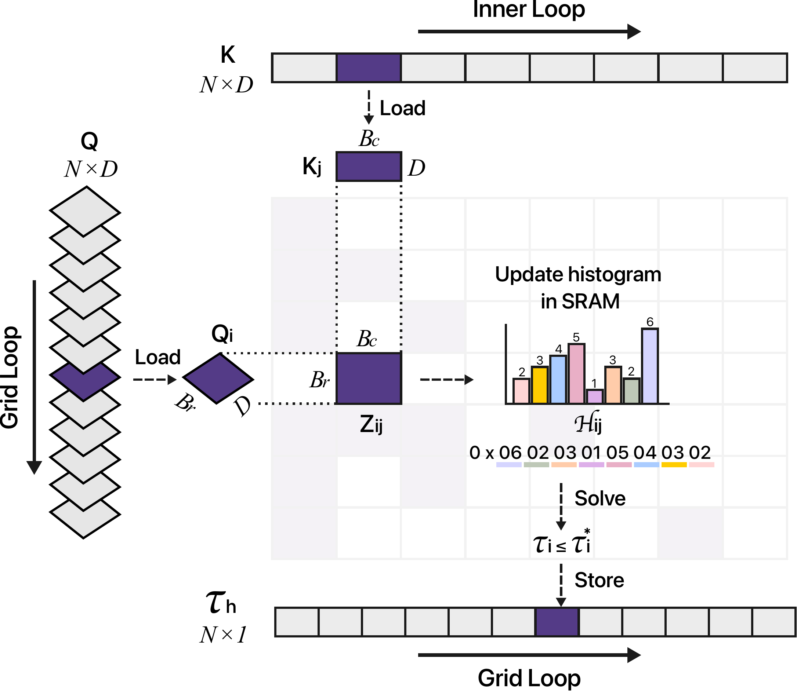
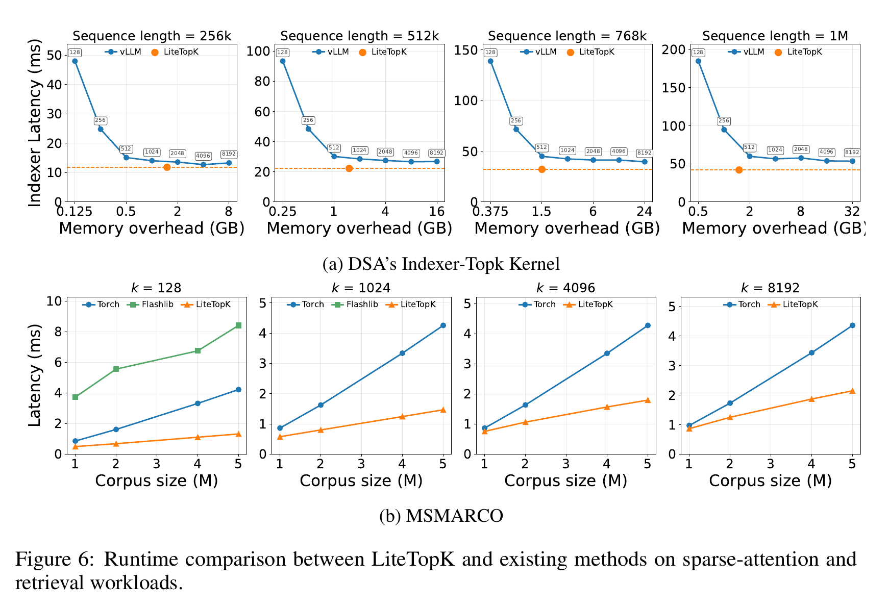

Sparse Attention · Part II
How sparse attention runs fast and how frontier labs do it
Say “sparse attention” and many people hear only “top-\(k\) on a softmax model.” Part I took the first half of that trap apart, showing that top-\(k\) is one member of an old, well-understood family of thresholded maps, some of which are sparse by construction and differentiable. It ended on the question the mathematics cannot settle: can a genuinely sparse model be trained and served at competitive speed? This part answers it with what is running today. I will first draw the line the literature keeps blurring, between training-free approximations to a softmax model and models that are sparse natively (§2). Then I will read the two frontier systems that train selectors without differentiating through them, in their own words and their own equations (§3), and go down to the metal, where thresholds are bracketed with histograms and block masks are walked with single hardware instructions (§4). One table at the end organizes the whole zoo (§5).
Table of Contents
Notation as in Part I: scores \(\mathbf z\in\mathbb R^n\); weights \(\mathbf p\in\triangle^n\) or masks \(\mathbf y\in[0,1]^n\); cardinality \(k\); threshold \(\tau\) (or \(\nu\), \(b\)); \([t]_+=\max\{t,0\}\); support \(S(\cdot)\); capped simplex \(C_k=\{\mathbf y\in[0,1]^n:\mathbf 1^\top\mathbf y=k\}\); and \(\alpha\text{-entmax}(\mathbf z)=[(\alpha-1)\mathbf z-\tau\mathbf 1]_+^{1/(\alpha-1)}\). As in Part I, mathematical claims come with their hypotheses and a collapsible proof, and experimental numbers come with their conditions.
1. Introduction
The object at the center of the selector systems in this part is the hard top-\(k\) mask. Write it as \(\operatorname{topkmask}(\mathbf z) = \arg\max_{\mathbf y\in C_k}\langle\mathbf z,\mathbf y\rangle\), the maximizer of a linear function over the capped simplex \(C_k\), whose vertices are the \(\binom nk\) hard \(k\)-subsets, so the argmax lands on the vertex selecting the \(k\) largest scores. Part I §4.3 stated the trouble in one line. Away from ties this map is locally constant, so its Jacobian is identically zero; at ties it jumps. Zero almost everywhere is worse than noisy, because the loss could be reduced by selecting differently and the gradient says nothing about how.
A sizable research area manufactures a gradient anyway, by relaxing or randomizing the selection; surveying it is not this post’s job. What matters here is what deployed systems do about the dead gradient. Some avoid learnable scorers altogether. The two frontier-scale systems examined in §3 train one by distilling the softmax attention it replaces, with the selector cut out of the graph, and explain why. Either way, one system-level problem remains for everybody: given scores, find the threshold fast, at context lengths where moving memory, not doing arithmetic, is the scarce resource (§4). That second problem is where this post earns the word “systems,” and where the last piece of Part I’s false dichotomy finally dissolves.
2. Training-free vs. trainable
Here is the fact that triggered this series. Open the proceedings of a recent conference and “sparse attention” is everywhere, with dozens of papers per cycle. Read them closely and most are not about sparse models at all. They take a model that was pretrained with dense softmax attention and, at inference time, skip computation or evict state. That is one family. The other family makes sparsity part of the model itself, present during training, so that training and inference compute the same thing. The line between the two determines what each method can and cannot achieve, and the papers themselves blur it often enough that this section draws it once, carefully, before anything else.
Training-free methods need no retraining, which is their great practical appeal, and the best of them are excellent engineering. But they inherit a hard constraint. The model they run on assigns strictly positive weight to every token (Part I §2.2), so any sparse shortcut is an approximation of a dense distribution. Whenever it keeps a strict subset, it discards some probability mass \(\delta > 0\). The output error that mass induces is at most \(2B\delta\) for values bounded by \(B\), a tight bound, and it is generically nonzero whenever \(\delta>0\) (Duarte et al., 2026, Props. 1–2). Larger allowances shrink the floor; no allowance short of the full context makes it provably zero. Every training-free method in this post is a way of controlling that floor, not of removing it: FFD’s top-δ test discards only mass below \(e^{-\delta}\) of the peak, BLASST’s \(\ln\lambda\) rule carries an explicit error bound, SALE calibrates per-head thresholds, Twilight prunes to a top-\(p\) core (§4.4). Good engineering, honest bounds, same ceiling.
Trainable methods make sparsity native. Block-native systems like NSA, MoBA and InfLLM-V2 learn which blocks to attend to; DSA and MSA train token- and block-level selectors at frontier scale (§3); and the entmax line trains attention that is sparse at the level of individual tokens, with exact zeros. Because the model is genuinely sparse, inference stops being an approximation problem and becomes support recovery, and it can be exact. The superset guarantee of §4.1 is the formal version, and it has no training-free analogue: restrict a softmax model to any subset and the answer changes, restrict an entmax model to a superset of its support and it does not.
The extreme point of the trainable family, and the running example of §4, is α-entmax attention, which Part I built from first principles. Replace softmax by \(\alpha\text{-entmax}(\mathbf z)=[(\alpha-1)\mathbf z-\tau\mathbf 1]_+^{1/(\alpha-1)}\) and the map assigns exact zeros to every token whose score falls below a threshold \(\tau(\mathbf z)\) that moves with the scores, while staying differentiable exactly where it matters (Part I §4.3). Nothing about it approximates anything. A model trained this way is sparse because the operator is, the same computation at training and at inference, and the number of surviving tokens is an outcome of the scores rather than a knob someone tuned. Keep it in mind through what follows. The systems of §3 train hard top-\(k\) selectors instead and must engineer around the dead membership gradient; the kernels of §4 compute \(\tau\) fast, for entmax out of necessity, since \(\tau\) is the operator, and for top-\(k\) as an approximation knob.
One honest wrinkle. A thin middle band retrofits trained components onto a frozen or lightly tuned backbone: SeerAttention distills block gates from the model’s own attention maps (Gao et al., 2025), DuoAttention learns which heads deserve a full cache (Xiao et al., 2024), and Dynamic Memory Compression retrofit-trains per-head eviction decisions (Nawrot et al., 2024). They buy accuracy with a little training, but the target they are trained to imitate is still the dense softmax model, so for the question that organizes this post they sit with the training-free family, under the same ceiling. The frontier systems of §3 are a different case again, trained selectors inside natively sparse models, distilled for reasons of their own.
This line is why the post keeps the families apart to the end. Section 3 covers the trained systems and what they say about gradients. Section 4 covers the kernels, where the two families meet, because bracketing a threshold is the same trick whether the threshold guards an approximation or recovers an exact support; the difference is what “exact” means for each method, and Table 1 records it row by row. Section 5 lays the whole territory out in that one table, family by family.
3. Detach and distill
Two frontier-scale systems now run sparse attention with a learned selector: DeepSeek-V3.2 and MiniMax’s MSA. Neither differentiates through selection. Both train the selector by distilling the softmax attention it replaces, with the selector explicitly cut out of the computational graph. Unusually, and to their credit, both papers say exactly why. This section quotes them, because the wording is the evidence, and writes their losses down, because the equations are short and they repay reading.
3.1 DeepSeek-V3.2’s DSA
DSA scores every prefix token with a “lightning indexer,” \(I_{t,s} = \sum_{j} w^I_{t,j}\cdot\mathrm{ReLU}(\mathbf q^I_{t,j}\cdot\mathbf k^I_s)\), a few FP8 heads with ReLU chosen “for throughput consideration,” and keeps the top \(k=2048\) tokens per query (DeepSeek-AI, 2025). Training is two-stage, and the paper writes the objective down plainly. In the dense warm-up, everything is frozen except the indexer, which is trained by KL divergence toward a teacher built from the model’s own attention. For query \(t\), sum the softmax attention scores across all heads and L1-normalize along the sequence; call the result \(p_{t,:}\). Then, in their notation (Eqs. 3–4),
$$\begin{aligned} \text{warm-up:}\quad &\mathcal L^{I} \;=\; \textstyle\sum_t\, \mathbb D_{\mathrm{KL}}\big(p_{t,:} \,\big\|\, \mathrm{Softmax}(I_{t,:})\big),\\[3pt] \text{sparse stage:}\quad &\mathcal L^{I} \;=\; \textstyle\sum_t\, \mathbb D_{\mathrm{KL}}\big(p_{t,\mathcal S_t} \,\big\|\, \mathrm{Softmax}(I_{t,\mathcal S_t})\big), \qquad \mathcal S_t=\{s \mid I_{t,s}\in \mathrm{Top}\text{-}k(I_{t,:})\}. \end{aligned}$$The warm-up trains only the indexer, for 1,000 steps × 16 sequences × 128K tokens = 2.1B tokens. The sparse stage then switches selection on, keeps the same alignment restricted to the selected set \(\mathcal S_t\), and lets the main model train on language modeling: 15,000 steps × 480 × 128K = 943.7B tokens. Notice what the loss is not. It is not the task loss; it is softmax imitation, twice. And the sentence this series has been circling:
“It is worth noting that we detach the indexer input from the computational graph for separate optimization. The training signal of the indexer is from only \(\mathcal L^{I}\), while the optimization of the main model is according to only the language modeling loss.”
— DeepSeek-AI (2025), §2.1, on DSA’s sparse training stage
Read it plainly. No task-loss gradient reaches the selector directly; the task influences it only indirectly by moving the teacher it imitates. The indexer also scores all \(L\) prefix tokens for each query, \(O(L^2)\) per layer over the sequence, which is why §4’s kernel literature exists. The released inference code carries the indexer and its top-\(k\) selection in kernel.py of deepseek-ai/DeepSeek-V3.2-Exp.
3.2 MiniMax’s MSA
MSA is the block-level counterpart on GQA. Two added projection matrices score tokens, max-pool to blocks, take top-\(k\) blocks per query and GQA group (the local block always included), and run exact block-sparse softmax over the selection; the selected-attention cost per query is fixed as length grows (Lai et al., 2026) (released kernels in sparse.py of MiniMax-AI/MSA). Their §3.2 opens with the cleanest statement of the problem in the systems literature:
“The top-\(k\) selection in Equation 7 is non-differentiable, so the language-modeling loss cannot train the index Q/K projections \(W_q^{\text{idx}}, W_k^{\text{idx}}\) directly. We therefore train the Index Branch with a KL alignment loss and use three mechanisms to stabilise sparse training: Gradient Detach, Indexer Warmup, and a forced Local Block.”
— Lai et al. (2026), §3.2
The loss is worth writing out, because its two stop-gradients are the entire philosophy. Write \(P^{\mathrm{idx},(r)}_{i,\cdot}\) for the Index Branch’s softmax over the visible tokens of the selected blocks, and \(P^{(r)}_{i,\cdot}\) for the teacher, the per-head Main-Branch softmax over those same tokens, averaged at the probability level over the \(G\) query heads of GQA group \(r\). Then (their Eq. 10)
$$\mathcal L_{\mathrm{KL}} \;=\; \frac{1}{N H_{kv}} \sum_{i=1}^{N}\sum_{r=1}^{H_{kv}} D_{\mathrm{KL}}\Big(\mathrm{stopgrad}\big(P^{(r)}_{i,\cdot}\big) \,\Big\|\, P^{\mathrm{idx},(r)}_{i,\cdot}\Big),$$and, one line later, the input detach \(\mathbf Q^{\mathrm{idx}} = \mathrm{stopgrad}(\mathbf X)\,\mathbf W_q^{\mathrm{idx}}\), \(\mathbf K^{\mathrm{idx}} = \mathrm{stopgrad}(\mathbf X)\,\mathbf W_k^{\mathrm{idx}}\) (their Eq. 11). The first stopgrad keeps the student from gaming the teacher. The second keeps the KL out of the backbone entirely. Together they mean the loss updates exactly two matrices, the index projections, and nothing else. What makes MSA especially useful here is that they ablated the alternatives (10B-parameter pilot, their App. B). Give the indexer an additive attention output so the LM loss trains it (“LM loss only”) and it “performs poorly on long-context retrieval: without an objective on the top-\(k\) selection itself, the indexer receives little direct pressure to select relevant blocks.” Use “KL loss only” and short-context ability drops (the removed output path was doing work). And un-detach the KL and two failure modes appear: gradient spikes propagating into the backbone, “LM-loss divergence within a few hundred steps,” and, more insidious:
“We attribute this regression to a self-distillation effect: the backbone can lower the KL loss by simplifying the Main Branch attention distribution, rather than by improving the Index Branch.”
— Lai et al. (2026), App. B.3

Fig. 1. MSA’s detachment ablation, at 10B-parameter pilot scale. Top: without the detach, KL-gradient spikes propagate into the backbone and the LM loss diverges within a few hundred steps; with it, training is stable. Bottom: even at stable coefficients, the un-detached run gradually regresses on general benchmarks, the self-distillation effect quoted above. Reproduced from Figures 8–9 of Lai et al. (2026), App. B.3.
The student, given influence over the teacher, dumbs the teacher down. Their final recipe keeps the KL and the detach, then drops the indexer’s value head after warm-up. At scale, it trains a natively multimodal, 109B-parameter model on 3T tokens to match its GQA baseline. At 1M context, the paper reports 28.4× less per-token attention compute, 14.2× faster prefill, and 7.6× faster decoding on H800 GPUs.
3.3 Precedents
Detached distillation from softmax attention was not invented at the frontier. SeerAttention trains block-level “attention gates” by KL toward the 2D-max-pooled attention map of the frozen model: “only requires training the gate parameters,” with the observation that “jointly training the gate and model from scratch, as in MoE, is costly and difficult” (Gao et al., 2025). DuoAttention learns per-head gate values (full attention vs. streaming) with a distillation loss on synthetic data, model frozen, and binarizes them at deployment (Xiao et al., 2024). The other systems dodge learning a scorer at all. NSA reuses the softmax scores of its compressed-attention branch as block importance, with no auxiliary loss. Its discussion of alternative selection strategies says explicitly that with a separate learned scorer, “since the selection operation is non-differentiable, importance score computation based on neural networks relies on auxiliary loss” (Yuan et al., 2025); InfLLM-V2 goes parameter-free precisely because a learned compressor in its position “would not receive gradients” (Zhao et al., 2026) (CUDA kernels at OpenBMB/infllmv2_cuda_impl); MoBA’s gate is mean-pooling plus top-\(k\), no parameters to train (Lu et al., 2025) (its fused kernel is moba_efficient.py in MoonshotAI/MoBA). Across the deployed long-context systems surveyed here, the pattern is consistent. None passes a task gradient through its selector. They imitate softmax attention (DSA, MSA, SeerAttention), reuse it (NSA, InfLLM-V2), or hard-code around it (MoBA).
3.4 An open question
What it buys is legible in MSA’s ablations: stability (no KL spikes into the backbone), locality (each layer’s selector gets a clean, well-shaped supervision signal), and immunity from the self-distillation collapse, because the teacher cannot be gamed if the student cannot touch it. What it costs is equally legible. The selection is trained to reproduce softmax attention, not directly to serve the task. No task gradient reaches the selector; the only route from the language-modeling objective is indirect, through changes to the teacher distribution. The trained-in adaptivity results of Part I §4.1 sit on the other side of exactly this line.
And one more thing follows from Part I that I have not seen stated, so let me state it carefully as a question rather than a claim. The distillation target in both systems is a softmax attention distribution. Part I’s dispersion bound says that, if the logit spread remains bounded, that distribution’s entropy climbs toward \(\log n\) as context grows. At 128K and beyond, the teacher is, provably, drifting toward the very dispersion that motivated sparsity in the first place. DSA’s two training stages run on 128K-token sequences. What does it cost to train a selector to imitate a flattening target? Does the imitation inherit the dispersion, does the top-\(k\) truncation mask it, does it not matter at all? I do not know, and I have found no measurement of it in public work.
I will not pretend neutrality here. I find the detached recipe simultaneously completely reasonable and deeply unsatisfying. Reasonable, because MSA’s ablation is real evidence that the naive alternatives are worse, and because in a 3T-token training run for the 109B-parameter MSA model, stability is not a nicety. Unsatisfying, because “the loss cannot train the projections directly” is a statement about hard top-\(k\), not about sparse allocation in general. α-entmax is a counterexample. It produces exact zeros with an exact, cheap Jacobian (Part I §4.3), and nothing of that kind appears in either paper’s experiments. The honest summary is that differentiable selection at frontier scale is not refuted; it is untested. That is the open problem, and I will leave it exactly there.
4. Bracketing the threshold
Gradient or no gradient, everyone still has to find the threshold, whether it is a top-\(k\) cutoff over a million scores inside a fused kernel or an entmax normalizer during training. In the last two years, three communities with almost disjoint bibliographies (serving-kernel engineers, the softmax-threshold line, and the entmax line) have converged on one recipe: compute a coarse, cheap statistic of the score distribution; use it to bracket the threshold; act conservatively outside the bracket; refine only inside it. This section documents the convergence, because I know of nowhere else it is laid out side by side.
First, the paradigm shift that makes any of this worth doing, because it is where §1’s false dichotomy dissolves. The old objection to unstructured sparsity was arithmetic: deciding whether a token matters means computing its score, a \(d\)-dimensional dot product, and the output contribution it might save is another \(d\)-dimensional multiply-accumulate, so the test costs the same order of compute as the work it hopes to skip. When compute was the bottleneck, input-dependent sparsity could not pay for itself. Tensor cores inverted the ledger. A pre-tensor-core P100 SXM2 could execute roughly 29 half-precision FLOPs in the time it took to move one byte through HBM (21.2 TFLOPS against 732 GB/s (NVIDIA, 2016)); an H100 SXM executes roughly 295 (≈989 dense bf16 TFLOPS against 3.35 TB/s (NVIDIA, 2022)), an order of magnitude more compute per byte. This widened gap makes HBM traffic decisive in many long-context attention regimes, which is FlashAttention’s founding observation: “a missing principle is making attention algorithms IO-aware,” i.e., reducing “the number of memory reads/writes between GPU high bandwidth memory (HBM) and GPU on-chip SRAM” (Dao et al., 2022). In that regime the economics of sparsity flip. An operator may happily spend extra FLOPs (α-entmax’s root-finding iterations cost more arithmetic than softmax’s single normalization) provided those FLOPs decide memory reads and writes, because in those regimes skipped bytes, not skipped multiplications, are where wall-clock time lives. Every kernel in this section is that sentence, implemented three different ways.
Figure 2 separates the three data flows. Score computation does not disappear. What changes is whether tensor-sized intermediates cross the HBM boundary, and whether later passes have to touch value blocks that are already known to contribute zero.
Where the bytes go
Three execution plans for attention. Tan boxes live in HBM, teal boxes stay on chip, purple boxes are compact metadata, and red arrows mark full attention-matrix traffic.
Fig. 2. The naïve pipeline materializes both the score matrix and the normalized weights. FlashAttention fuses dense tiling, normalization, and output accumulation, eliminating those quadratic HBM intermediates while still visiting every admissible tile. The AdaSplash-style path also streams the score grid, derives a threshold and block mask, and then restricts the output and backward traversals to surviving blocks. The diagram is schematic; exact scan counts and tile schedules depend on the kernel.
4.1 Conservative errors are safe
The recipe works because of two small results that make one-sided errors harmless. The first belongs to the entmax family recalled in §2, where sparsity is exact:
Conservative supersets are exact (Treviso et al., 2022, Prop. 1; Duarte et al., 2026, Prop. 2). Let \(\mathbf p = \alpha\text{-entmax}(\mathbf z)\) with support \(S\), and let \(M \supseteq S\) be any candidate set. Then \(\alpha\text{-entmax}(\mathbf z|_M) = \mathbf p\): restricting attention to any superset of the support reproduces the full result exactly. Recall is the only thing that matters; precision only buys speed.
Proof
The normalization \(\sum_{i\in M}[(\alpha-1)z_i-\tau]_+^{1/(\alpha-1)} = 1\) is solved by the full-problem \(\tau^\star\), since coordinates in \(M\setminus S\) contribute zero at \(\tau^\star\); by uniqueness of the root, the restricted problem returns the same \(\tau^\star\), hence the same weights. ∎
This is the property that first licensed predicting entmax supports before computing any scores (Treviso et al., 2022), and it is what makes exact sparse decoding a support-recovery problem rather than an approximation (Duarte et al., 2026). The second is a triviality worth stating because an entire kernel literature leans on it:
A subsample’s \(k\)-th statistic is a one-sided bound. For any \(T\subseteq[n]\) with \(|T|\ge k\): the \(k\)-th largest score within \(T\) is \(\le\) the \(k\)-th largest score overall. So a threshold estimated from any subsample errs only toward keeping too much; it can never cause a false rejection of a true top-\(k\) element.
Proof
Let \(a\) be the \(k\)-th largest in \(T\). At least \(k\) elements of \(T\) are \(\ge a\); those elements also lie in \([n]\), so \([n]\) has at least \(k\) elements \(\ge a\), whence the global \(k\)-th largest is \(\ge a\). ∎
One more shared move deserves a name before the tour: anchor at the maximum. The entmax threshold always lives in a unit-length window below the top score, \(m - 1 \le \tau^\star \le m - n^{1-\alpha}\) with \(m = (\alpha{-}1)\max_i z_i\) (Peters et al., 2019), and the softmax-side thresholds of §4.4 are all of the form “within \(\delta\) of the (running) max.” The max is the one statistic every streaming kernel computes anyway; every lane builds its bracket on it.
4.2 AdaSplash-2
Training-time entmax attention needs \(\tau\) for every query row, inside the FlashAttention tiling, without materializing \(n\times n\) scores. AdaSplash did it with a safeguarded Halley-bisection hybrid (cubic local convergence, bisection fallback whenever a step exits the bracket), cutting ~23 bisection iterations to ~3, a 15× solver speedup (2.38 ms vs. 36.67 ms for standard-Gaussian rows of length 8192, averaged over 1000 runs on one H100), and making α-entmax training competitive with FlashAttention-2 (Gonçalves et al., 2025). AdaSplash-2 then attacked the initialization: shift scores so the max is 1, bin \([0,1]\) into \(B\) equal bins in SRAM, and solve the normalization on the histogram instead of the scores (Gonçalves et al., 2026). Figure 3 shows the kernel’s anatomy.

Fig. 3. The AdaSplash-2 histogram kernel. For each query block \(\mathbf Q_i\) and key block \(\mathbf K_j\), the kernel computes a score block \(\mathbf Z_{ij}\), updates a per-row histogram \(\mathcal H\) in SRAM, and uses it to estimate an initial threshold \(\tau_h \le \tau^\star\) for each query without \(n\times n\) materialization. Reproduced from Figure 3 of Gonçalves et al. (2026).
The estimate this produces is not merely close. It is provably conservative.
The histogram bracket (Gonçalves et al., 2026, Prop. 1). Let \(\tau^\star\) solve the exact normalization \(f(\tau)=0\) and \(\tau_h\) solve the histogram version \(f_h(\tau)=0\), where each score is replaced by the left edge of its bin of width \(h=1/B\). Then
$$\tau^\star - h \;<\; \tau_h \;\le\; \tau^\star .$$The estimate is conservative, never above the truth, so the support it induces is a superset of the true support (the superset guarantee then applies), and the error is at most \(1/B\).
Proof sketch
Left-edge binning lowers every score by less than \(h\). At the exact root this gives \(f_h(\tau^\star) \le f(\tau^\star)=0<f_h(\tau^\star-h)\). Continuity and strict decrease then place the histogram root in \((\tau^\star-h,\tau^\star]\). ∎
The histogram itself uses a packing trick. With \(B = 8\), each local accumulator packs eight 8-bit counters into
one uint64. A query row maintains \(B_c\) such accumulators, one per column position in a
query-key block; shift-and-add updates them without atomics, and a final shift-and-mask reduction produces
the row histogram. From \(\tau_h\), the refinement solver (Halley for \(\alpha\le1.5\), Newton for
\(\alpha\in(1.5,2]\), dispatched by the smoothness dial of Part I §4.3) typically converges in 1–2
iterations. Figure 4 draws the bracket.
The histogram bracket, computed
24 shifted scores in \([0,1]\), α = 1.5; exact \(\tau^\star\) vs. histogram estimate \(\tau_h\) for \(B \in \{4, 8, 16\}\).
Fig. 4. Each row bins the same 24 scores (ticks, top) into \(B\) left-edge bins and solves the entmax normalization on the histogram; both roots are computed in-page by bisection to \(10^{-12}\). The dark line is the exact \(\tau^\star\); each dot is \(\tau_h\), and the shaded band is the guaranteed bracket \([\tau_h, \tau_h + 1/B)\) containing \(\tau^\star\) (the histogram bracket above); the estimate always sits below the truth, by less than one bin width, and halving the bin width halves the bracket. Conservative by construction; the support induced by \(\tau_h\) can only be too large, never too small.
Solving for \(\tau\) is half the kernel. The other half is spending the sparsity it certifies, and this
part never leaves the registers. While the weights are computed, the kernel also builds a binary block mask
\(\mathcal M \in \{0,1\}^{T_r\times T_c}\) marking which score blocks contain any nonzero attention
weight. “Builds” is almost too grand a word. Per query-row block, a single int32 accumulates one
bit per key block, a shift and an add as the \(\tau\) pass streams by, and is flushed to memory once every
32 blocks, so the whole mask costs \(T_r \times T_c\) bits. The output pass and the entire
backward pass then never touch the full grid. Each loads one 4-byte word per 32 column-blocks and
interrogates it in place: a population count (popc) says how many blocks survive in that word,
and find-next-set (fns) jumps straight to the next surviving one, so the inner loop executes
exactly popc-many iterations, \(O(\|\mathcal M\|_0)\) traversal instead of
\(O(T_r \times T_c)\)
(Gonçalves et al., 2026). Both are single
hardware instructions on a register operand, and in the released Triton kernel they are visible almost line
for line, popc imported from libdevice and fns as a one-line inline-PTX call. A
skipped block therefore costs nothing at all. Its values are never read from HBM in the output pass, its
gradients are never written in backward, and not one instruction is spent discovering that it can be
skipped beyond the bit that already said so. That is exactly where the economics of §4’s opening cash out.
The interactive α-entmax to AdaSplash explainer lets you step through the threshold solver, histogram bracket, sparse Jacobian, and bitmask traversal.
All of this is public code, and short. The fused Triton kernels live in
adasplash_v2.py
of deep-spin/adasplash
(pip install adasplash); the first-generation block-mask variant is
adasplash_block_mask.py
in the same package.
On random Gaussian inputs, with sparsity controlled through query variance, the AdaSplash-2 kernels are over 2× faster than both FlashAttention-2 implementations at high block sparsity (causal, bf16, head dim 64, 4K–128K, one A6000). The same work trains a 1-billion-parameter entmax language model for 50B tokens at 4K context, then extends it to 32K with 10B ProLong tokens. At decode time, EntmaxKV plays a related game against the KV cache. Per-page coordinate-wise min/max key boxes give a deterministic upper bound on every in-page score; paired with a conservative threshold estimate, that policy provably cannot miss a support token. Its Gaussian-aware selector trades this worst-case guarantee for adaptivity, reaching support recall 0.9977 at 16K context and 3.36×/5.43× over full-cache softmax/entmax decoding at 1M tokens (A6000, batch 8) (Duarte et al., 2026).

Fig. 5. What the bracket buys: runtime (forward + backward) as a function of input sparsity for causal attention. AdaSplash-2’s Triton kernels overtake a highly optimized CUDA FlashAttention-2 already at moderate sparsity and pull away as block sparsity grows. Reproduced from Figure 1 of Gonçalves et al. (2026).
4.3 The serving lane
GPU top-\(k\) selection has been a bucket game since long before LLMs: bucketSelect and radixSelect (histogram the values by range or by digits, find the bucket containing the \(k\)-th element, recurse into it) date to 2012 (Alabi, Blanchard, Gordon & Steinbach, 2012), with bitonic-select database variants (Shanbhag, Pirk & Madden, 2018), a comprehensive modern study and the adaptive AIR top-\(k\) (Zhang, Naruse, Li & Wang, 2023), and RadiK’s scalable radix select, which also documents that the peaked score distributions of LLM inference are adversarial for radix digits, fixed by a random shift (Li et al., 2024). What the sparse-attention wave added is fusion with the scorer, and the numbers explain the urgency: profiling GLM-5.2 at 1M-token prefill across eight B200s, the DSA scoring-plus-selection kernel is 83.7% of prefill runtime; attention over the 2048 selected tokens is 4.5% (Yin et al., 2026).
LiteTopK is one recent instance of the fused design, and it puts the full bracketing pattern in one kernel. It samples the previous chunk’s top-\(3k\) scores to estimate the range (temporal coherence supplies the sample; §4.1’s one-sided bound supplies the safety), builds an equal-width histogram, identifies the threshold bin, folds the score→bin map into the existing FFMA chain so gating costs no extra instructions, lets idle warps update the histogram lock-free (a stale threshold is “merely looser,” conservative again), and runs exact selection only inside the threshold bin. Measured (1M context, chunk 8192, \(k=2048\), B200, inputs from GLM-5.2 activations on Wikipedia): 146.6 → 41.9 ms against the official DSA kernel (3.5×), 1.24× over the Blackwell-optimized vLLM kernel, 1.22× end-to-end prefill (Yin et al., 2026). A small ecosystem has grown around the same problem. HISA prunes the scan hierarchically. It mean-pools the scorer’s keys per block of size \(B\), keeps the top-\(m\) blocks (forcing the first and last), and re-scores tokens only inside the \(\le mB\) survivors. It is training-free, requires \(mB\ge k\), and cuts per-query scan cost from \(O(L)\) to \(O(L/B + mB)\), with up to 3.75× indexer-kernel speedup at 64K (one A100, TileLang, query length 1024, \(k=2048\), block size 128, 8K candidate pool) at near-parity on LongBench for DeepSeek-V3.2 and GLM-5, while its block-only ablation on DeepSeek-V3.2 collapses to 0.00 on mid-depth needle retrieval at 128K, a sharp warning that block granularity alone may not be enough (Xu, Meng et al., 2026). StreamIndex removes the memory cliff instead, with a chunked partition–merge top-\(k\) that never materializes the score tensor, taking the same scorer from out-of-memory at 65K (on one H200) to running at 1M with 6.21 GB peak, with set-level parity verified empirically at small lengths, minimum recall 0.998 at 16K, on synthetic inputs; “our contribution is engineering,” the authors say, and the honesty is part of why I cite it (Jaber & Jaber, 2026). IndexCache skips the work wholesale: adjacent layers share 70–100% of their selections, so let most layers reuse the previous scorer’s indices, for 1.82× prefill at 200K on a 30B DSA-style model in SGLang on an H100 node (Bai et al., 2026). Fused small-\(k\) KNN kernels exist in classical-ML tooling as well. LiteTopK reports that FlashLib’s kernel degrades sharply once \(k\) reaches the hundreds (Yang et al., 2026), while BBC brings the threshold-bucket collector to large-\(k\) CPU retrieval (Yin et al., 2026b). Different papers, one skeleton: statistic, bracket, conservative gate, refine.

Fig. 6. The fused bracket at work. Top: DSA’s indexer-top-\(k\) kernel latency versus the auxiliary memory each configuration needs, at 256K–1M context on a B200; the vLLM baseline trades memory for speed along its curve, while LiteTopK (orange) sits below it at a fraction of the memory. Bottom: the same kernel as a retrieval top-\(k\) on MSMARCO, against Torch and FlashLib, whose fused small-\(k\) design degrades as \(k\) grows. Reproduced from Figure 6 of Yin et al. (2026).
4.4 The softmax-threshold lane
A parallel line asks the top-\(p\)-flavored question (how much mass am I discarding?) and answers it with a threshold anchored at the max, because under softmax, distance-from-max in logit space is relative mass: \(s_{ij} \ge m_i - \delta \iff p_{ij}/p_{i,\max} \ge e^{-\delta}\). Faster-than-Flash decoding (FFD) builds its entire kernel around this identity. A 2-bit quantized “thumbnail” of the keys is scanned to test the top-δ condition against a pseudo-max computed only from sink and local tokens (no global reduction), and blocks that pass are recomputed with an 8-bit residual to near-FP16 accuracy. Setting δ = 5 “guarantees that we discard only tokens whose contribution is less than \(e^{-5}\approx 0.67\%\) of the peak attention mass”; those are their words. Notice the quiet adaptivity. The number of survivors floats with the sharpness of each row. Measured: layer-averaged kernel speedups of 7.33×/6.18× (δ = 5/7; RTX 4090, batch 1) with a peak of 11.63×, and end-to-end decoding throughput up to 2.37× over FlashAttention-2 at 16K on an RTX 4090 (1.96× on H100); on RULER at 32K the dense Llama-3.1-8B-Instruct baseline stays near parity (e.g. variable tracking 98.4 vs. 99.6), with measured layer sparsity of 82%/73% (Liu et al., 2026). BLASST is the same idea embedded in FlashAttention’s own loop: skip a key block whenever its local max trails the running max by more than \(\ln\lambda\), with a one-parameter calibration \(\lambda = a/L\) and an explicit error bound \(\|\mathbf y-\hat{\mathbf y}\| \le |S|\,B_c\,\lambda\,V_{\max}\); 1.52× prefill at 71.9% sparsity against FlashAttention-3 BF16 on B200 (Yuan et al., 2026). SALE runs the scan in 4-bit with per-head calibrated thresholds on relative attention scores (≥3.36× prefill beyond 64K on Llama-3.1-8B, RTX 4090s) (Ji et al., 2026). Twilight wraps a base selector and prunes its conservative candidate set to the top-\(p\) core. On LongBench it removes up to 98% of the tokens over-selected by the base selector, while LLaMA-3.1-8B-Instruct stays within <1% of full attention (Lin et al., 2025). And the lane now has a compute-bound frontier. With MLA making decoding arithmetic-bound, TileSparse applies the threshold to compute tiles rather than tokens, where each KV page either is fully pruned or gets enough query heads to stay above the hardware’s roofline ridge, with an AutoTuner choosing tiered patterns. On DeepSeek-V3-0324, under a 256-token-equivalent allowance, it reports 36.4% higher average RULER accuracy than ArkVale. At 99% of full-attention accuracy, it uses 18.3% less attention work than that K-only baseline (Wang et al., 2026). The δ-thresholds here are the structural softmax mirror of the entmax bracket in §4.2; both are thresholds pegged to the max, and the difference is that entmax’s threshold is the operator itself, while softmax’s is an approximation knob with an error bound.
5. The landscape
One table for the whole zoo, grouped by the family line of §2. Read across for what each method does; the column that matters most is vs. softmax, which records whether a method approximates a dense softmax model (a permanent error floor, §2) or computes a genuinely sparse model, at block granularity (block-native) or with individual-token exact zeros (\(\delta = 0\)). Method names link to the papers. The table scrolls sideways.
| Method | Stage | Granularity | Selection signal | Query-aware | vs. softmax | Key idea |
|---|---|---|---|---|---|---|
| Training-free — retrofit sparsity onto a frozen softmax model, no retraining | ||||||
| StreamingLLM | decode | token | first tokens + recent window | no | approximates | “attention sinks” absorb overflow mass |
| H2O | decode | token | accumulated attention (heavy hitters) | no | approximates | greedy heavy-hitter eviction, near-optimal only if attention is submodular |
| TOVA | decode | token | lowest current attention | yes (at eviction) | approximates | decoder as a multi-state RNN |
| FastGen | prefill→decode | token / head | per-head structure profile | partly | approximates | cheapest eviction policy per head |
| SnapKV | prefill→decode | token | end-of-prompt voting window | yes | approximates | observation window picks the keepers |
| PyramidKV | prefill | token | attention, non-uniform layer allowance | yes | approximates | pyramidal per-layer allocation |
| Quest | decode | page | per-page min/max bound on \(\mathbf q^\top\mathbf k\) | yes | approximates | query-aware top-\(k\) pages, no recall guarantee |
| Loki | decode | token | PCA-subspace key ranking | yes | approximates | score keys in a low-rank subspace |
| ShadowKV | decode | chunk | low-rank keys, CPU-offloaded values | yes | approximates | keep everything, re-select every step |
| MInference | prefill | block | offline head pattern + online index | yes | approximates | A-shape / Vertical-Slash / Block-Sparse patterns |
| FlexPrefill | prefill | block | per-input pattern switch + cumulative threshold | yes | approximates | choose the pattern per input |
| SampleAttention | prefill | block / structured | sampled cumulative attention | yes | approximates | adaptive structured sparsity for TTFT |
| XAttention | prefill | block | antidiagonal block score | yes | approximates | cheap block-importance estimate |
| SpargeAttention | prefill + decode | block | two-stage online filter | yes | approximates | model-agnostic: language, image, video |
| MagicPIG | decode | token (sampled) | LSH importance sampling | yes | approximates | sample, don’t select; near-unbiased estimate |
| Twilight / Tactic / Double-P | decode | token / block | adaptive top-\(p\) allowance | yes | approximates | data-dependent allowance, not a fixed \(k\) |
| SALE | prefill | block | 4-bit score estimate, calibrated threshold | yes | approximates (bounded) | low-bit scan gates blocks by relative score (§4.4) |
| FFD | decode | block | 2-bit thumbnail vs. pseudo-max, top-δ | yes | approximates (bounded) | discard only mass below \(e^{-\delta}\) of peak (§4.4) |
| BLASST | prefill + decode | block | running-max gap \(\ln\lambda\) | yes | approximates (bounded) | skip blocks inside FlashAttention’s own loop (§4.4) |
| TileSparse | decode (MLA) | compute tile | tile-level threshold, AutoTuner | yes | approximates | prune or batch tiles against the roofline ridge (§4.4) |
| Elastic Attention | test time | head | per-head sparsity-ratio routing | partly | approximates | adapt each head’s sparsity without retraining |
| LessIsMore | decode (reasoning) | token | cross-head unified selection | yes | approximates | one shared token set across heads for reasoning |
| Serving kernels for trained sparse models; engineering the scan, with semantics shown per row | ||||||
| LiteTopK | prefill | token (top-\(k\)) | previous chunk’s top-\(3k\) + histogram bin | yes | exact top-\(k\) | fused indexer + selection, 3.5× vs. the DSA kernel (§4.3) |
| HISA | prefill | block → token | pooled block keys, re-score survivors | yes | “nearly the same set” | hierarchical scan pruning (§4.3) |
| StreamIndex | prefill | token (top-\(k\)) | chunked partition–merge | yes | set parity (empirical) | never materialize the score tensor (§4.3) |
| IndexCache | prefill | layer | cross-layer index reuse | yes | approximates (reuse) | adjacent layers share 70–100% of selections (§4.3) |
| Trainable retrofit — small trained components on a frozen softmax backbone, still imitating softmax | ||||||
| SeerAttention (-R) | prefill (R: decode) | block | self-distilled learned gates | yes | approximates | learn the model’s own sparsity, backbone frozen (§3.3) |
| DuoAttention | decode | head | learned retrieval/streaming split | partly | approximates | full cache only for retrieval heads (§3.3) |
| DMC | decode | token | learned append-vs-merge | partly | approximates | retrofit-trained eviction and merging |
| Trainable — sparsity is part of the model; training and inference compute the same thing | ||||||
| Sparse Transformer | train | block | fixed strided + local | no | fixed pattern | \(O(n\sqrt n)\) factorized attention |
| Longformer / Big Bird | train | block | window + global (+ random) | no | fixed pattern | \(O(n)\); Big Bird is a universal approximator |
| Reformer | train | bucket | angular LSH hashing | yes | content-native | attend within a hash bucket |
| Routing Transformer | train | cluster | online spherical \(k\)-means | yes | content-native | attend within the same centroid |
| Landmark Attention | train | block | landmark tokens + grouped softmax | yes | block-native | trained block retrieval, the 2023 ancestor |
| NSA | train | block | compress + select + slide, gated | yes | block-native | hardware-aligned three-branch attention |
| MoBA | train | block | MoE-style top-\(k\) over KV blocks | yes | block-native | attention as expert routing |
| InfLLM-V2 | train | block | dense↔sparse switchable | yes | block-native | smooth short-to-long adaptation |
| NOSA | train | block | offloading-aware selection | yes | block-native | constrains CPU–GPU transfer volume by design |
| HSA / RAMba | train | chunk | token-to-chunk relevance, hierarchical | yes | block-native | 370M RAMba, 60B-token pretraining at 4K plus 4K-context synthetic fine-tuning; perfect 64M passkey retrieval |
| DSA | train | token (top-\(k\)) | FP8 lightning indexer, detached KL (§3.1) | yes | native top-\(k\) | trained sparse attention in a frontier model |
| MSA | train | block | trained block scoring on GQA, detached KL (§3.2) | yes | block-native | production block-sparse at 1M context |
| Entmax-native; support sparsity at token or block granularity | ||||||
| sparsemax / α-entmax | train | token | input-dependent threshold \(\tau\), exact zeros | yes | exact (δ=0) | differentiable, input-adaptive sparsity (Part I) |
| ASEntmax | train | token | α-entmax + learned \((\delta+\beta(\log n)^{\gamma})\) scaling | yes | exact (δ=0) | length-generalizing sparse attention (Part I §3.3) |
| AdaSplash / AdaSplash-2 | train | token → block-skip | entmax support + histogram bracket + bitmask (§4.2) | yes | exact (δ=0) | fused kernels make exact entmax fast |
| DashAttention | train | block (variable count) | differentiable entmax chunk routing | yes | native, entmax-routed | entmax decides how many blocks, per query (Part I §4.1) |
| EntmaxKV | decode | token | support-aware page selection via bounds (§4.2) | yes | exact when support is covered | support recovery is the target; measured recall can be below 1 |
Table 1. “Approximates” means the method targets a dense softmax model and discards nonzero mass, so its error has a floor (§2); this includes the retrofit group, whose trained components imitate a softmax target, and IndexCache, whose reuse approximates a trained selector. “Fixed pattern” / “block-native” / “content-native” means trainable, with sparsity at block, bucket or chunk granularity; Reformer and Routing Transformer restrict support by hashing and clustering, but they are trained with that restriction, so they approximate nothing. “Exact (δ=0)” means the model is genuinely sparse at the token level, so inference can match full attention exactly. The serving-kernel group accelerates trained sparse models rather than defining one. Stages, granularities and signals are as described in each paper; the one-line ideas are my compression of their abstracts and method sections.
Three doses of discipline before reading the table too triumphantly. The Sparse Frontier evaluates the training-free family across a four-axis taxonomy and finds that it genuinely shifts the accuracy–efficiency frontier, larger-but-sparse beating smaller-but-dense at equal cost, while warning that safe sparsity levels are task-dependent and that “fixed-budget methods in production are suboptimal” (Nawrot et al., 2026). SCBench stress-tests the KV lifecycle, multi-turn and shared-context serving, and finds that methods holding sub-\(O(n)\) memory collapse there while \(O(n)\)-memory dynamic sparsity holds up (Li et al., 2025). And passkey-style benchmarks sit in the easiest quadrant of the long-context difficulty map, low dispersion and low scope, so headline needle numbers systematically flatter every row of the table (Goldman et al., 2024). Our own corner owes a disclosure too. The largest public entmax pretraining I found by mid-2026 is the 1-billion-parameter AdaSplash-2 run, pretrained for 50B tokens at 4K context and then extended to 32K with 10B ProLong tokens (Gonçalves et al., 2026); frontier-scale entmax pretraining has not been shown, a gap to state rather than paper over.
Squint at the table long enough and a single position emerges, the one this series has been arguing for. Sparsity should be a property of the model, trained in, exact where possible, and co-designed with the kernel. That is precisely the object Part I built from sparsemax and α-entmax, and §3 and §4 are what it takes to train and run it. The efficiency era did not replace the principled lineage; it caught up to it.
6. Conclusion
Here is the series in one paragraph. Under bounded score spread, softmax attention must flatten at long context, a theorem, and exact zeros are the exit that changes the mathematics rather than the constants (Part I §3). Top-\(k\), top-\(p\), and sparse prediction maps do not share one objective, but they share a computational skeleton, and the sparse maps carry exact gradients where hard mask membership has none (Part I §§4–5). Among the frontier-scale systems surveyed here, the hard selectors do not use that task gradient; they detach their selectors and imitate the softmax attention they replace, for reasons they state and one open question they do not address (§3). Whatever the operator, threshold search repeatedly takes the form “bracket, then refine,” and it pays in the regimes where bytes, not FLOPs, are the scarce resource (§4).
Where the evidence runs out, I have tried to say so in place. The teacher-dispersion question of §3.4 has no measurement. The serving kernels and the fused training kernels have not met; as published, one lane brackets for hard selection and carries no gradients, while the other differentiates exactly. And the lanes share no benchmark, so their different meanings of “exact,” bit-exact selection, bounded discarded mass, exact once the support is covered, cannot yet be weighed against one another. Those are the edges of what is known, as best I can draw them, which was the point of writing this down.
References
In order of first appearance. Venues verified against the publisher, proceedings, or arXiv record as of August 2026; preprints marked as such. Two ICML 2026 papers (Faster Than Flash; TileSparse) are cited from their official PDFs and conference abstracts.
- Duarte, Couceiro, Treviso. EntmaxKV: Support-Aware Decoding for Entmax Attention. arXiv preprint, 2026.
- Gao, Zeng, Du, Cao, Zhou, Qi, Lai, So, Cao, Yang, Yang. SeerAttention: Self-Distilled Attention Gating for Efficient Long-Context Prefilling. NeurIPS 2025 (arXiv title: Learning Intrinsic Sparse Attention in Your LLMs).
- Xiao, Tang, Zuo, Guo, Yang, Tang, Fu, Han. DuoAttention: Efficient Long-Context LLM Inference with Retrieval and Streaming Heads. ICLR 2025.
- Nawrot, Łańcucki, Chochowski, Tarjan, Ponti. Dynamic Memory Compression: Retrofitting LLMs for Accelerated Inference. ICML 2024.
- DeepSeek-AI. DeepSeek-V3.2: Pushing the Frontier of Open Large Language Models. arXiv preprint, 2025.
- Lai, Xu, Yang, Chen, Xu, Zeng, Li, Sun, Zhu, Zhang, Hu, Li, Gao, Li, Zhu, Zhou, Zhao. MiniMax Sparse Attention. arXiv preprint, 2026.
- Yuan, Gao, Dai, Luo, Zhao, Zhang, Xie, Wei, Wang, Xiao, Wang, Ruan, Zhang, Liang, Zeng. Native Sparse Attention: Hardware-Aligned and Natively Trainable Sparse Attention. ACL 2025.
- Zhao, Zhou, Su, Xiao, Li, Li, Zhang, Zhao, Li, Huang, Sun, Han, Liu. InfLLM-V2: Dense-Sparse Switchable Attention for Seamless Short-to-Long Adaptation. ICLR 2026.
- Lu, Jiang, Liu, et al. MoBA: Mixture of Block Attention for Long-Context LLMs. NeurIPS 2025.
- NVIDIA. Tesla P100 Data Sheet. NVIDIA Corporation, 2016.
- NVIDIA. NVIDIA H100 Tensor Core GPU (product specifications). NVIDIA Corporation, 2022.
- Dao, Fu, Ermon, Rudra, Ré. FlashAttention: Fast and Memory-Efficient Exact Attention with IO-Awareness. NeurIPS 2022.
- Treviso, Góis, Fernandes, Fonseca, Martins. Predicting Attention Sparsity in Transformers. SPNLP @ ACL 2022.
- Peters, Niculae, Martins. Sparse Sequence-to-Sequence Models. ACL 2019.
- Gonçalves, Treviso, Martins. AdaSplash: Adaptive Sparse Flash Attention. ICML 2025.
- Gonçalves, Pitorro, Niculae, Ponti, Li, Martins, Treviso. AdaSplash-2: Faster Differentiable Sparse Attention. ICML 2026.
- Alabi, Blanchard, Gordon, Steinbach. Fast k-Selection Algorithms for Graphics Processing Units. ACM Journal of Experimental Algorithmics 17, art. 4.2, 2012.
- Shanbhag, Pirk, Madden. Efficient Top-K Query Processing on Massively Parallel Hardware. SIGMOD 2018.
- Zhang, Naruse, Li, Wang. Parallel Top-K Algorithms on GPU: A Comprehensive Study and New Methods. SC ’23.
- Li, Zhou, Zhang, Wei, Li, Chen. RadiK: Scalable and Optimized GPU-Parallel Radix Top-K Selection. ICS 2024.
- Yin, Gao, Li, Yin, Cong. LiteTopK: Exploiting the Curse of Dimensionality for a Fused Indexer-TopK Kernel in Long-Context Sparse Attention. arXiv preprint, 2026.
- Xu, Meng, Jiang, Wang, Zhou, Wang, Wu, Pan, Tang, Pei, Liu, Yin, Sun, Zhang. HISA: Efficient Hierarchical Indexing for Fine-Grained Sparse Attention. arXiv preprint, 2026.
- Jaber, Jaber. StreamIndex: Memory-Bounded Compressed Sparse Attention via Streaming Top-k. arXiv preprint, 2026.
- Bai, Dong, Jiang, Lv, Du, Zeng, Tang, Li. IndexCache: Accelerating Sparse Attention via Cross-Layer Index Reuse. arXiv preprint, 2026.
- Yang, Xi, Zhao, Mang, Wang, Sun, Keutzer, Gonzalez, Han, Xu, Stoica. FlashLib: Bringing Flash Magic to Classical Machine Learning Operators. Software library, 2026.
- Yin, Cong, Zeng, Zhu, Cui. BBC: Improving Large-k Approximate Nearest Neighbor Search with a Bucket-Based Result Collector. arXiv preprint, 2026.
- Liu, Ning, Li, Liu, Song, Zhang, He, Qiu. Faster Than Flash: Exploiting Attention Sparsity for Efficient Long-Context Decoding. ICML 2026.
- Yuan, Shinn, Xu, Cui, Klimiashvili, Xiao, Zheng, Li, Zhou, Ye, You, Zheng, Brown, Wang, Hoehnerbach, Cai, Demouth, Owens, Hu, Han, Liu, Mao. BLASST: Dynamic Blocked Attention Sparsity via Softmax Thresholding. MLSys 2026.
- Ji, Zhang, Fu, Cui. SALE: Low-Bit Estimation for Efficient Sparse Attention in Long-Context LLM Prefilling. ICML 2026.
- Lin, Tang, Yang, Wang, Tang, Tian, Stoica, Han, Gao. Twilight: Adaptive Attention Sparsity with Hierarchical Top-p Pruning. NeurIPS 2025.
- Wang, Zuo, Chen, Zhou, Ho, Yang. TileSparse: Arithmetic-Intensity-Aware Sparse Attention for Compute-Bound LLM Decoding. ICML 2026.
- Xiao, Tian, Chen, Han, Lewis. Efficient Streaming Language Models with Attention Sinks. ICLR 2024.
- Zhang, Sheng, Zhou, Chen, Zheng, Cai, Song, Tian, Ré, Barrett, Wang, Chen. H2O: Heavy-Hitter Oracle for Efficient Generative Inference of Large Language Models. NeurIPS 2023.
- Oren, Hassid, Yarden, Adi, Schwartz. Transformers are Multi-State RNNs. EMNLP 2024.
- Ge, Zhang, Liu, Zhang, Han, Gao. Model Tells You What to Discard: Adaptive KV Cache Compression for LLMs. ICLR 2024.
- Li, Huang, Yang, Venkitesh, Locatelli, et al. SnapKV: LLM Knows What You Are Looking for Before Generation. NeurIPS 2024.
- Cai, Zhang, Gao, Liu, Li, et al. PyramidKV: Dynamic KV Cache Compression Based on Pyramidal Information Funneling. COLM 2025.
- Tang, Zhao, Zhu, Xiao, Kasikci, Han. Quest: Query-Aware Sparsity for Efficient Long-Context LLM Inference. ICML 2024.
- Singhania, Singh, He, Feizi, Bhatele. Loki: Low-Rank Keys for Efficient Sparse Attention. NeurIPS 2024.
- Sun, Chang, Bao, Zheng, Zheng, Liu, Dong, et al. ShadowKV: KV Cache in Shadows for High-Throughput Long-Context LLM Inference. ICML 2025.
- Jiang, Li, Zhang, Wu, Luo, et al. MInference 1.0: Accelerating Pre-filling for Long-Context LLMs via Dynamic Sparse Attention. NeurIPS 2024.
- Lai, Lu, Luo, Ma, Zhou. FlexPrefill: A Context-Aware Sparse Attention Mechanism for Efficient Long-Sequence Inference. ICLR 2025.
- Zhu, Duan, Chen, Liu, Feng, Lv, Chuanfu, Li, Lin, Yang. SampleAttention: Near-Lossless Acceleration of Long-Context LLM Inference with Adaptive Structured Sparse Attention. MLSys 2025.
- Xu, Xiao, Huang, Guo, Han. XAttention: Block Sparse Attention with Antidiagonal Scoring. ICML 2025.
- Zhang, Xiang, Huang, Wei, Xi, Zhu, Chen. SpargeAttention: Accurate and Training-Free Sparse Attention Accelerating Any Model Inference. ICML 2025.
- Chen, Sadhukhan, Ye, Zhou, Zhang, et al. MagicPIG: LSH Sampling for Efficient LLM Generation. ICLR 2025.
- Zhu, Tang, Xu, Gu, Zeng, Kadekodi, Zhao, Li, Jin, Krishnamurthy, Kasikci. Tactic: Adaptive Sparse Attention with Clustering and Distribution Fitting for Long-Context LLMs. ICLR 2026.
- Ni, Zhang, Yu, Nelson, Lee, Cai, Porikli, Kim, Liu, Zhao. Double-P: Hierarchical Top-P Sparse Attention for Long-Context LLMs. arXiv preprint, 2026.
- Tang, Qiu, Yang, et al. Elastic Attention: Test-Time Adaptive Sparsity Ratios for Efficient Transformers. ICML 2026.
- Yang, Zhang, Jain, Cao, Yuan, Chen, Jia, Netravali. Less Is More: Fast and Accurate Reasoning with Cross-Head Unified Sparse Attention. ICML 2026.
- Gao, Guo, Cao, Xia, et al. SeerAttention-R: Sparse Attention Adaptation for Long Reasoning. arXiv preprint, 2025.
- Child, Gray, Radford, Sutskever. Generating Long Sequences with Sparse Transformers. arXiv preprint, 2019.
- Beltagy, Peters, Cohan. Longformer: The Long-Document Transformer. arXiv preprint, 2020.
- Zaheer, Guruganesh, Dubey, Ainslie, Alberti, Ontañón, Pham, Ravula, Wang, Yang, Ahmed. Big Bird: Transformers for Longer Sequences. NeurIPS 2020.
- Kitaev, Kaiser, Levskaya. Reformer: The Efficient Transformer. ICLR 2020.
- Roy, Saffar, Vaswani, Grangier. Efficient Content-Based Sparse Attention with Routing Transformers. TACL 2021.
- Mohtashami, Jaggi. Landmark Attention: Random-Access Infinite Context Length for Transformers. NeurIPS 2023.
- Huang, Wang, Han, Zhao, Su, Sun, et al. NOSA: Native and Offloadable Sparse Attention. arXiv preprint, 2025.
- Hu, Leng, Zhao, Tu, Wu. Hardware-Aligned Hierarchical Sparse Attention for Efficient Long-Term Memory Access. NeurIPS 2025.
- Martins, Astudillo. From Softmax to Sparsemax: A Sparse Model of Attention and Multi-Label Classification. ICML 2016 (PMLR 48:1614–1623).
- Vasylenko, Pitorro, Martins, Treviso. Long-Context Generalization with Sparse Attention. ICLR 2026.
- Huang, Gonçalves, Alvetreti, Li, Han, Ponti, Martins, Treviso. DashAttention: Differentiable and Adaptive Sparse Hierarchical Attention. arXiv preprint, 2026.
- Nawrot, Li, Huang, Ruder, Marchisio, Ponti. The Sparse Frontier: Sparse Attention Trade-offs in Transformer LLMs. Findings of ACL 2026.
- Li, Jiang, Wu, Luo, Ahn, et al. SCBench: A KV Cache-Centric Analysis of Long-Context Methods. ICLR 2025.
- Goldman, Jacovi, Slobodkin, Maimon, Dagan, Tsarfaty. Is It Really Long Context if All You Need Is Retrieval? Towards Genuinely Difficult Long Context NLP. EMNLP 2024.